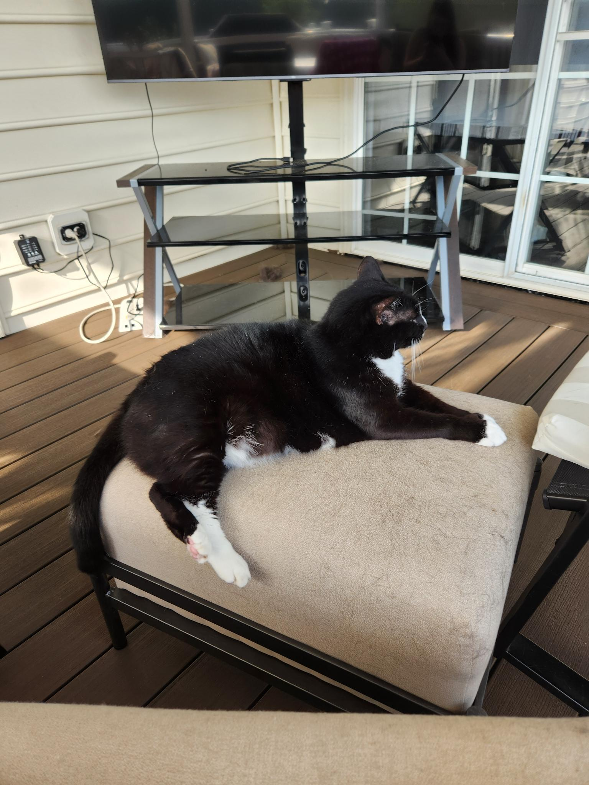

My Pets
Hi, I'm Isabelle Baker, and my favorite thing in life has always been animals. Let me introduce you to some of the ones I've known.
Hi, I'm Isabelle Baker, and my favorite thing in life has always been animals. Let me introduce you to some of the ones I've known.

If you wish to view this special boy, check out My Family Gallery.
| Year | Animals | Current Status |
|---|---|---|
| 2008 | Faith | Alive |
| 2009 | ||
| 2010 | ||
| 2011 | ||
| 2012 | ||
| 2013 | ||
| 2014 | Spidey & Pip | Spidey Deceased |
| 2015 | Kitty | Kitty Deceased |